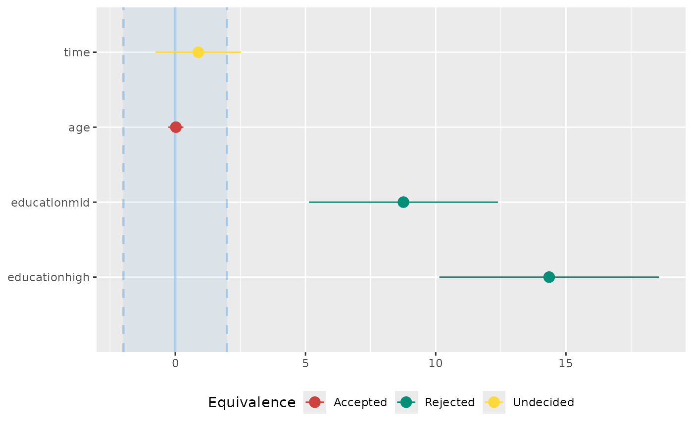

Compute the (conditional) equivalence test for frequentist models.
Usage
# S3 method for class 'lm'
equivalence_test(
x,
range = "default",
ci = 0.95,
rule = "classic",
verbose = TRUE,
...
)
# S3 method for class 'merMod'
equivalence_test(
x,
range = "default",
ci = 0.95,
rule = "classic",
effects = c("fixed", "random"),
verbose = TRUE,
...
)
# S3 method for class 'ggeffects'
equivalence_test(
x,
range = "default",
rule = "classic",
test = "pairwise",
verbose = TRUE,
...
)Arguments
- x
A statistical model.
- range
The range of practical equivalence of an effect. May be
"default", to automatically define this range based on properties of the model's data.- ci
Confidence Interval (CI) level. Default to
0.95(95%).- rule
Character, indicating the rules when testing for practical equivalence. Can be
"bayes","classic"or"cet". See 'Details'.- verbose
Toggle warnings and messages.
- ...
Arguments passed to or from other methods.
- effects
Should parameters for fixed effects (
"fixed"), random effects ("random"), or both ("all") be returned? Only applies to mixed models. May be abbreviated. If the calculation of random effects parameters takes too long, you may useeffects = "fixed".- test
Hypothesis test for computing contrasts or pairwise comparisons. See
?ggeffects::test_predictionsfor details.
Details
In classical null hypothesis significance testing (NHST) within a frequentist
framework, it is not possible to accept the null hypothesis, H0 - unlike
in Bayesian statistics, where such probability statements are possible.
"... one can only reject the null hypothesis if the test
statistics falls into the critical region(s), or fail to reject this
hypothesis. In the latter case, all we can say is that no significant effect
was observed, but one cannot conclude that the null hypothesis is true."
(Pernet 2017). One way to address this issues without Bayesian methods
is Equivalence Testing, as implemented in equivalence_test().
While you either can reject the null hypothesis or claim an inconclusive result
in NHST, the equivalence test - according to Pernet - adds a third category,
"accept". Roughly speaking, the idea behind equivalence testing in a
frequentist framework is to check whether an estimate and its uncertainty
(i.e. confidence interval) falls within a region of "practical equivalence".
Depending on the rule for this test (see below), statistical significance
does not necessarily indicate whether the null hypothesis can be rejected or
not, i.e. the classical interpretation of the p-value may differ from the
results returned from the equivalence test.
Calculation of equivalence testing
"bayes" - Bayesian rule (Kruschke 2018)
This rule follows the "HDI+ROPE decision rule" (Kruschke, 2014, 2018) used for the
Bayesian counterpart(). This means, if the confidence intervals are completely outside the ROPE, the "null hypothesis" for this parameter is "rejected". If the ROPE completely covers the CI, the null hypothesis is accepted. Else, it's undecided whether to accept or reject the null hypothesis. Desirable results are low proportions inside the ROPE (the closer to zero the better)."classic" - The TOST rule (Lakens 2017)
This rule follows the "TOST rule", i.e. a two one-sided test procedure (Lakens 2017). Following this rule, practical equivalence of an effect (i.e. H0) is rejected, when the coefficient is statistically significant and the narrow confidence intervals (i.e.
1-2*alpha) include or exceed the ROPE boundaries. Practical equivalence is assumed (i.e. H0 "accepted") when the narrow confidence intervals are completely inside the ROPE, no matter if the effect is statistically significant or not. Else, the decision whether to accept or reject practical equivalence is undecided."cet" - Conditional Equivalence Testing (Campbell/Gustafson 2018)
The Conditional Equivalence Testing as described by Campbell and Gustafson 2018. According to this rule, practical equivalence is rejected when the coefficient is statistically significant. When the effect is not significant and the narrow confidence intervals are completely inside the ROPE, we accept (i.e. assume) practical equivalence, else it is undecided.
Levels of Confidence Intervals used for Equivalence Testing
For rule = "classic", "narrow" confidence intervals are used for
equivalence testing. "Narrow" means, the the intervals is not 1 - alpha,
but 1 - 2 * alpha. Thus, if ci = .95, alpha is assumed to be 0.05
and internally a ci-level of 0.90 is used. rule = "cet" uses
both regular and narrow confidence intervals, while rule = "bayes"
only uses the regular intervals.
p-Values
The equivalence p-value is the area of the (cumulative) confidence distribution that is outside of the region of equivalence. It can be interpreted as p-value for rejecting the alternative hypothesis and accepting the "null hypothesis" (i.e. assuming practical equivalence). That is, a high p-value means we reject the assumption of practical equivalence and accept the alternative hypothesis.
Second Generation p-Value (SGPV)
Second generation p-values (SGPV) were proposed as a statistic that represents the proportion of data-supported hypotheses that are also null hypotheses (Blume et al. 2018, Lakens and Delacre 2020). It represents the proportion of the confidence interval range that is inside the ROPE.
ROPE range
Some attention is required for finding suitable values for the ROPE limits
(argument range). See 'Details' in bayestestR::rope_range()
for further information.
Note
There is also a plot()-method
implemented in the see-package.
References
Blume, J. D., D'Agostino McGowan, L., Dupont, W. D., & Greevy, R. A. (2018). Second-generation p-values: Improved rigor, reproducibility, & transparency in statistical analyses. PLOS ONE, 13(3), e0188299. https://doi.org/10.1371/journal.pone.0188299
Campbell, H., & Gustafson, P. (2018). Conditional equivalence testing: An alternative remedy for publication bias. PLOS ONE, 13(4), e0195145. doi: 10.1371/journal.pone.0195145
Kruschke, J. K. (2014). Doing Bayesian data analysis: A tutorial with R, JAGS, and Stan. Academic Press
Kruschke, J. K. (2018). Rejecting or accepting parameter values in Bayesian estimation. Advances in Methods and Practices in Psychological Science, 1(2), 270-280. doi: 10.1177/2515245918771304
Lakens, D. (2017). Equivalence Tests: A Practical Primer for t Tests, Correlations, and Meta-Analyses. Social Psychological and Personality Science, 8(4), 355–362. doi: 10.1177/1948550617697177
Lakens, D., & Delacre, M. (2020). Equivalence Testing and the Second Generation P-Value. Meta-Psychology, 4. https://doi.org/10.15626/MP.2018.933
Pernet, C. (2017). Null hypothesis significance testing: A guide to commonly misunderstood concepts and recommendations for good practice. F1000Research, 4, 621. doi: 10.12688/f1000research.6963.5
See also
For more details, see bayestestR::equivalence_test().
Further readings can be found in the references.
Examples
data(qol_cancer)
model <- lm(QoL ~ time + age + education, data = qol_cancer)
# default rule
equivalence_test(model)
#> # TOST-test for Practical Equivalence
#>
#> ROPE: [-1.99 1.99]
#>
#> Parameter | 90% CI | SGPV | Equivalence | p
#> -----------------------------------------------------------------
#> (Intercept) | [59.33, 68.41] | < .001 | Rejected | > .999
#> time | [-0.76, 2.53] | 0.835 | Undecided | 0.137
#> age | [-0.26, 0.32] | > .999 | Accepted | < .001
#> education [mid] | [ 5.13, 12.39] | < .001 | Rejected | 0.999
#> education [high] | [10.14, 18.57] | < .001 | Rejected | > .999
# conditional equivalence test
equivalence_test(model, rule = "cet")
#> # Conditional Equivalence Testing
#>
#> ROPE: [-1.99 1.99]
#>
#> Parameter | 90% CI | SGPV | Equivalence | p
#> -----------------------------------------------------------------
#> (Intercept) | [59.33, 68.41] | < .001 | Rejected | > .999
#> time | [-0.76, 2.53] | 0.835 | Undecided | 0.137
#> age | [-0.26, 0.32] | > .999 | Accepted | < .001
#> education [mid] | [ 5.13, 12.39] | < .001 | Rejected | 0.999
#> education [high] | [10.14, 18.57] | < .001 | Rejected | > .999
# plot method
if (require("see", quietly = TRUE)) {
result <- equivalence_test(model)
plot(result)
}
